Le laboratoire des cordes
Rapport généré par string_theory --rapport : chaque valeur est calculée par le programme (paramètres : Ms = 5000 GeV, gs = 0.1).
Illustrations
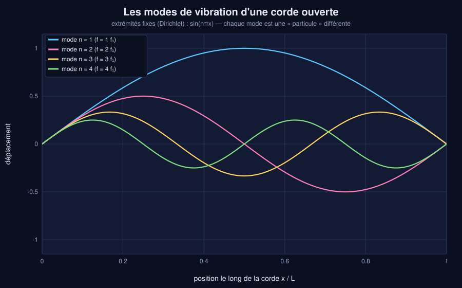
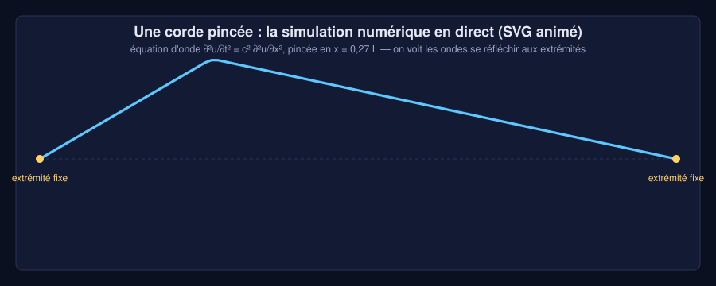
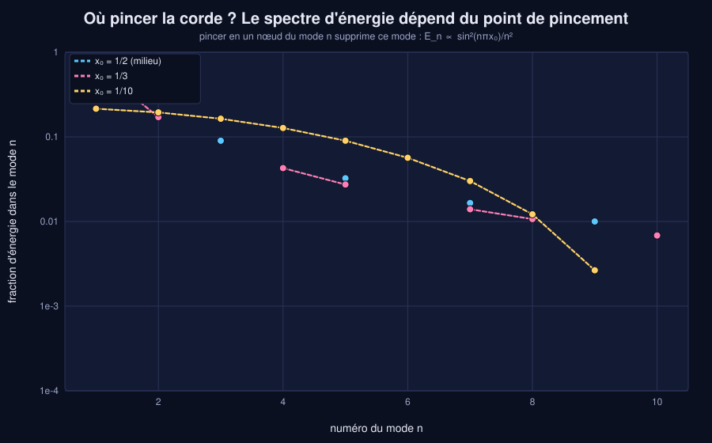
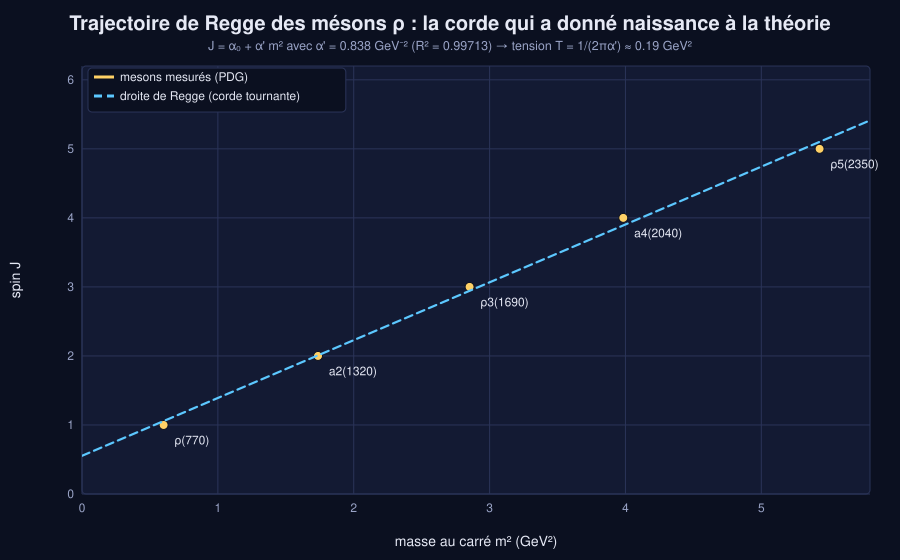
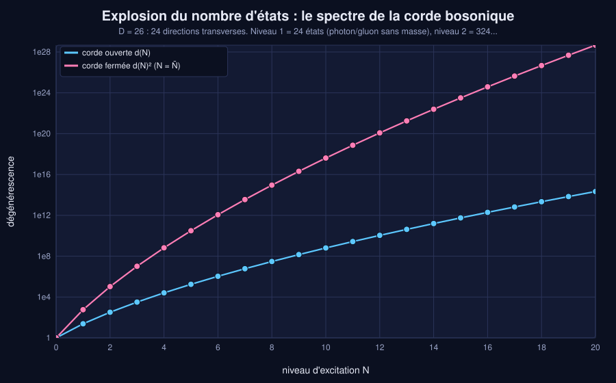
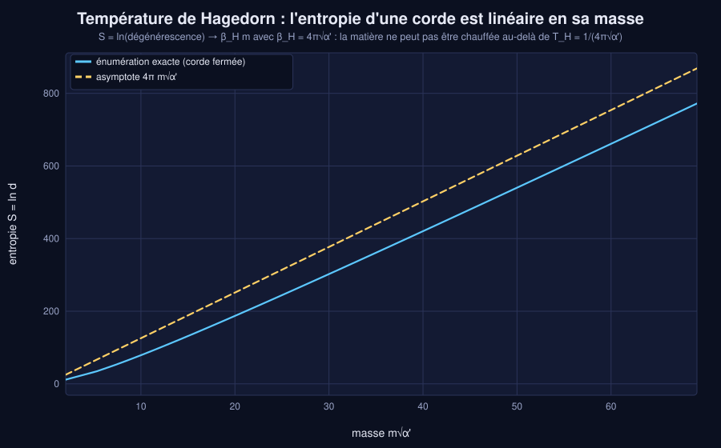
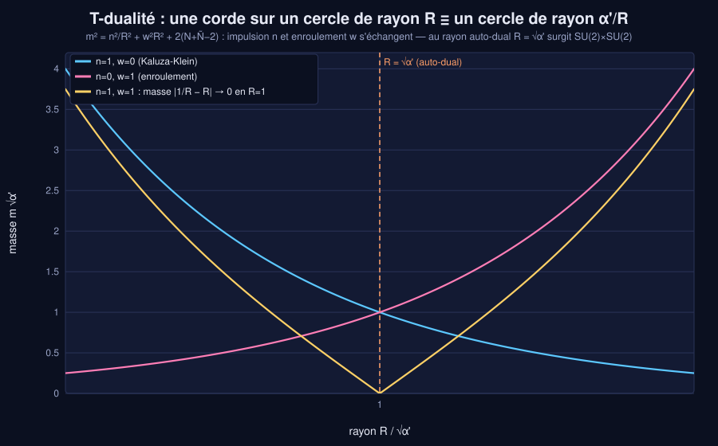
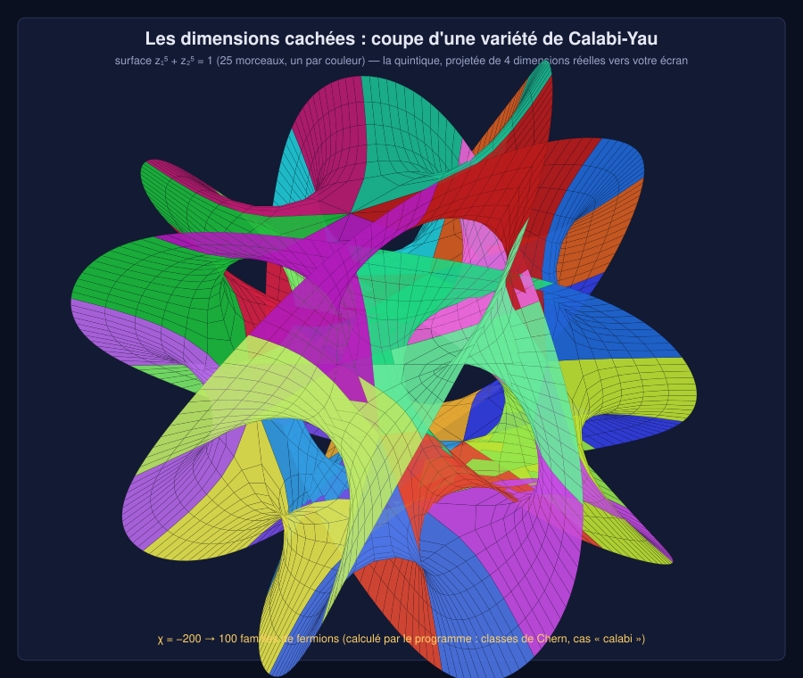
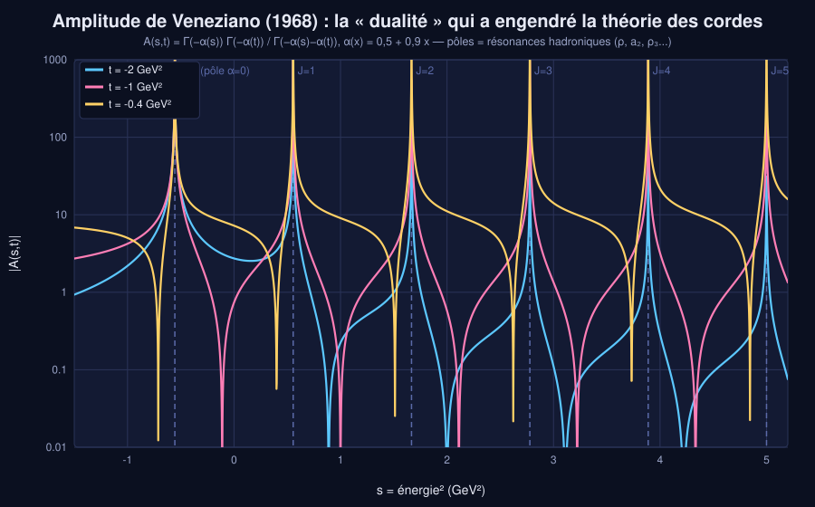
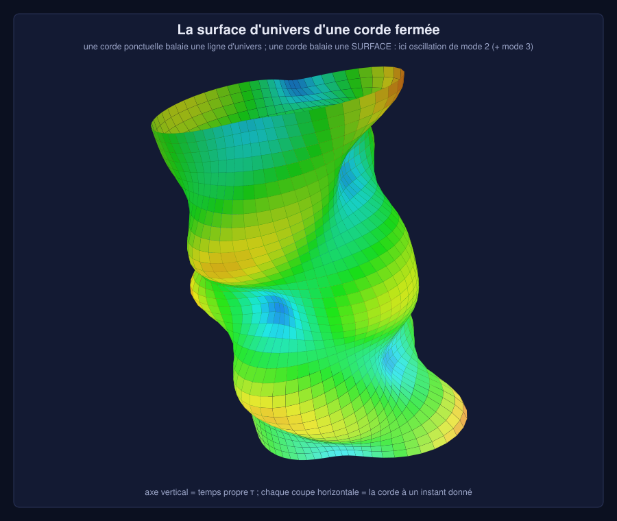
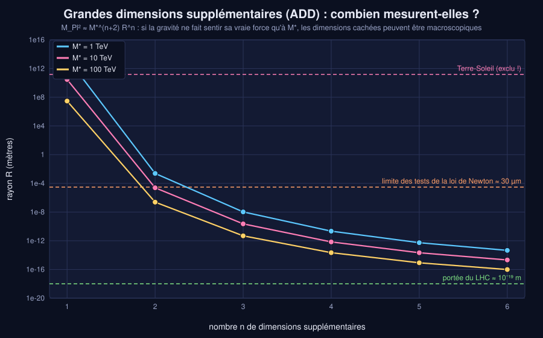
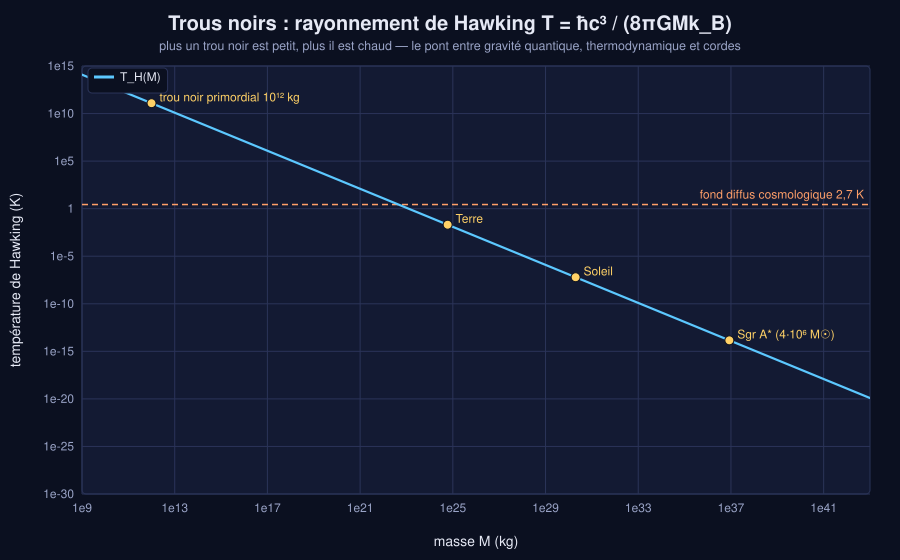
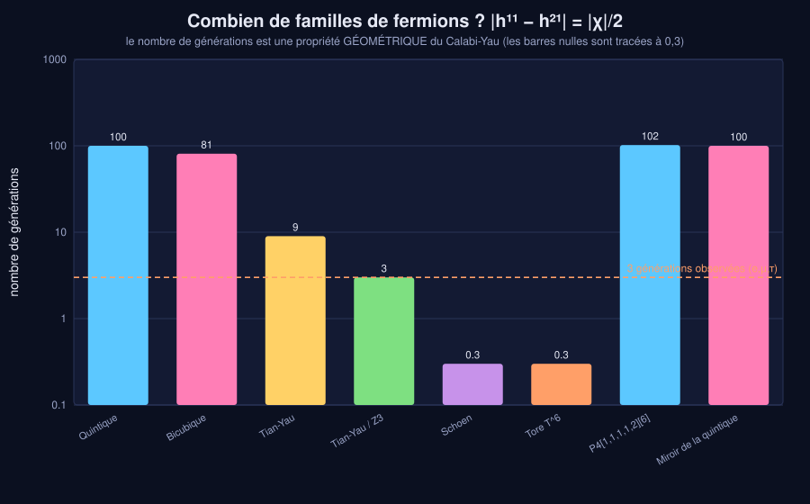
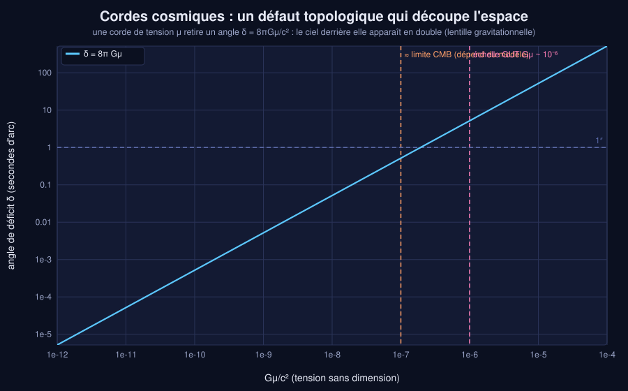
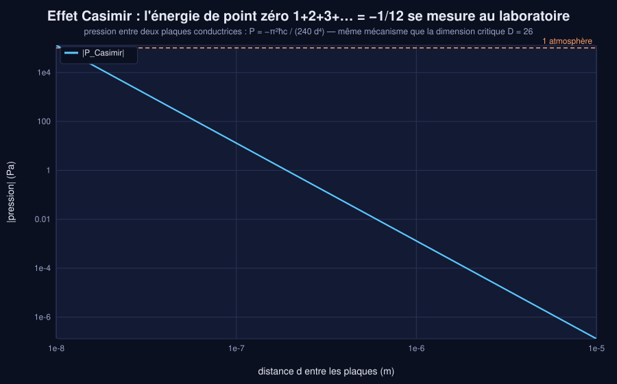
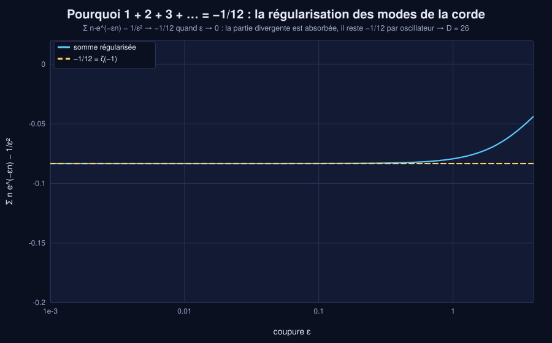
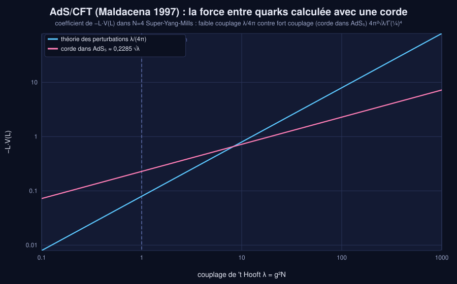
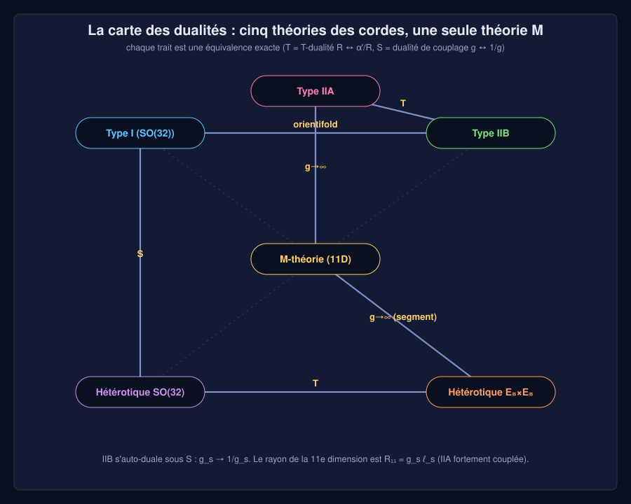
Études de cas
La corde pincée : modes et simulation
==============================================================================
CAS 1 - La corde pincée : modes, énergie, simulation numérique
==============================================================================
Corde de longueur L=1, extrémités fixes, pincée en x0 = 0.27 (flèche h = 1).
Énergie numérique initiale : 2.52874 énergie analytique h²/(2 x0 (1-x0)) : 2.53678 (écart = discrétisation)
mode n | fréquence f_n | amplitude b_n | énergie (%) | barre
-------+---------------+---------------+-------------+---------------------------------
1 | 0.5 | 0.7712 | 57.85% | #################
2 | 1 | 0.255 | 25.3% | ########
3 | 1.5 | 0.06421 | 3.609% | #
4 | 2 | -0.01598 | 0.3974% |
5 | 2.5 | -0.03664 | 3.265% | #
6 | 3 | -0.02655 | 2.469% | #
7 | 3.5 | -0.007107 | 0.2408% |
8 | 4 | 0.007739 | 0.3728% |
9 | 4.5 | 0.01239 | 1.209% |
10 | 5 | 0.008318 | 0.6729% |
11 | 5.5 | 0.0007996 | 0.007525% |
12 | 6 | -0.004887 | 0.3346% |
(somme des 12 premiers modes : 95.726% de l'énergie totale)
Simulation : 800 pas de temps (une période = 2), dérive relative maximale de l'énergie = 1.69e-14
Écart max simulation / série de Fourier à t = 2.002 : 8.80e-05
Forme de la corde à cet instant :
*****
*** *********
*** ********
**** *********
*** ********
*** ********
**---------------------------------------------------------------*****
>> Pincer en x0 = k/n annule le mode n : on choisit quelles « particules » on excite. Essayez --x0=0.5 !
Spectre de particules
==============================================================================
CAS 2 - Le spectre de particules d'une corde (M_s = 5000 GeV)
==============================================================================
alpha' = 1/M_s² = 4.000e-08 GeV⁻² ; longueur de corde l_s = sqrt(alpha') = 3.95e-20 m
Tension T = M_s²/(2π) = 3.231e+12 N (cf. corde de guitare ~ 100 N)
CORDE BOSONIQUE OUVERTE (D=26, 24 directions transverses), alpha' m² = N - 1 :
N | alpha' m² | masse (GeV) | états d(N) | commentaire
0 | -1 | i5000 | 1 | tachyon (instable)
1 | 0 | 0 | 24 | 24 états = vecteur sans masse (photon)
2 | 1 | 5000 | 324 | 324 = tenseur symétrique de SO(25)
3 | 2 | 7071 | 3200 |
4 | 3 | 8660 | 25650 |
5 | 4 | 10000 | 176256 |
6 | 5 | 11180 | 1073720 |
CORDE FERMÉE (N = Ñ, appariement de niveaux) : degénérescence d(N)² :
N = 1 : 576 états = 299 (graviton) + 276 (champ B) + 1 (dilaton) [somme = 576]
N = 2 : 104976 états à m = 10000 GeV
SUPERCORDE (D=10), spectre calculé par la fonction de partition + projection GSO :
niveau n | alpha' m² | masse (GeV) | secteur NS | secteur R | supersymétrie NS = R ?
0 | 0 | 0 | 8 | 8 | oui
1 | 1 | 5000 | 128 | 128 | oui
2 | 2 | 7071 | 1152 | 1152 | oui
3 | 3 | 8660 | 7680 | 7680 | oui
4 | 4 | 10000 | 42112 | 42112 | oui
5 | 5 | 11180 | 200448 | 200448 | oui
6 | 6 | 12247 | 855552 | 855552 | oui
>> Bosons (NS) et fermions (R) sont en nombre égal à chaque niveau : c'est la supersymétrie, et elle sort du calcul.
>> Le niveau massif n=1 de la supercorde a 128+128 états = un supermultiplet de spin 2 à la masse M_s.
Pourquoi D = 26 / 10
==============================================================================
CAS 3 - Pourquoi 26 dimensions ? Et 10 pour la supercorde ?
==============================================================================
Chacun des D-2 oscillateurs transverses ajoute ½Σn = ½·ζ(-1) = -1/24 à l'énergie du vide (effet Casimir),
d'où l'ordonnée à l'origine a = (D-2)/24 : c'est la régularisation de 1+2+3+... qui la fixe.
Régularisation numérique : S(ε) = Σ n e^{-εn} - 1/ε²
ε = 1 -> -0.079326406 (limite : -1/12 = -0.083333333)
ε = 0.3 -> -0.082959668 (limite : -1/12 = -0.083333333)
ε = 0.1 -> -0.083291683 (limite : -1/12 = -0.083333333)
ε = 0.03 -> -0.083329583 (limite : -1/12 = -0.083333333)
ε = 0.01 -> -0.083332917 (limite : -1/12 = -0.083333333)
ε = 0.001 -> -0.083333329 (limite : -1/12 = -0.083333333)
L'état d'énergie 1 doit être un vecteur SANS masse (invariance de Lorentz) : il faut a = 1.
D | a(D)=(D-2)/24 | masse² du niveau 1 (α'm² = 1-a) | verdict
4 | 0.083333333 | 0.91666667 | niveau 1 massif : il lui manque une polarisation (SO(D-1) ≠ SO(D-2))
10 | 0.33333333 | 0.66666667 | niveau 1 massif : il lui manque une polarisation (SO(D-1) ≠ SO(D-2))
24 | 0.91666667 | 0.083333333 | niveau 1 massif : il lui manque une polarisation (SO(D-1) ≠ SO(D-2))
25 | 0.95833333 | 0.041666667 | niveau 1 massif : il lui manque une polarisation (SO(D-1) ≠ SO(D-2))
26 | 1 | 0 | COHÉRENT : D = 26
27 | 1.0416667 | -0.041666667 | niveau 1 tachyonique : instable
30 | 1.1666667 | -0.16666667 | niveau 1 tachyonique : instable
Supercorde : fermions NS -> a = (D-2)/16, il faut a = 1/2 :
D = 4 a = 0.125
D = 9 a = 0.4375
D = 10 a = 0.5 <== D = 10 !
D = 11 a = 0.5625
Le programme retrouve seul : D_bosonique = 26, D_supercorde = 10
>> D = 10 (ou 11 en théorie M) n'est pas un choix : c'est une condition de cohérence quantique. Restent 6 dimensions à cacher.
Trajectoire de Regge des hadrons
============================================================================== CAS 4 - Trajectoire de Regge : les hadrons sont des cordes tournantes ============================================================================== Données (masses PDG arrondies) : mésons ρ, a2, ρ3, a4, ρ5 de spin J = 1..5 particule | J | masse (GeV) | m² (GeV²) ρ(770) | 1 | 0.775 | 0.600625 a2(1320) | 2 | 1.318 | 1.73712 ρ3(1690) | 3 | 1.689 | 2.85272 a4(2040) | 4 | 1.996 | 3.98402 ρ5(2350) | 5 | 2.33 | 5.4289 Régression J = α₀ + α' m² : α' = 0.8377 GeV⁻², α₀ = 0.553, R² = 0.99713 Tension de la corde de QCD : T = 1/(2πα') = 0.19 GeV² = 0.963 GeV/fm (~ 1 GeV par fermi : le confinement des quarks) Tension en newtons : 1.54e+05 N (≈ le poids de 15.7 tonnes !) Corde tournante classique (ouverte, extrémités à la vitesse c) : J/E² calculé par intégration numérique = 0.837685 (attendu α' = 0.837685) >> Une corde relativiste qui tourne obéit exactement à J = α' E² : la droite de Regge. C'est l'origine historique de la théorie.
Température de Hagedorn
==============================================================================
CAS 5 - Température de Hagedorn : la chaleur maximale de l'univers ? (M_s = 5000 GeV)
==============================================================================
Entropie S = ln(nombre d'états) d'une corde fermée de masse m : croissance LINÉAIRE en m.
N | m√α' | S = 2 ln d(N) | pente locale dS/dm | (limite 4π = 12.566)
50 | 14 | 120.77 | 10.731
100 | 19.9 | 185.99 | 11.245
300 | 34.58 | 356.16 | 11.789
1000 | 63.21 | 700.01 | 12.135
3000 | 109.5 | 1267 | 12.316
T_Hagedorn = M_s / (4π) = 397.9 GeV = 4.617e+15 K
(pour comparaison : centre du Soleil 1.6e7 K, transition quarks-hadrons de QCD ~ 1.7e12 K)
>> La pente 4π émerge lentement (corrections en 1/√N) : le comptage exact des états prédit la température limite.
T-dualité
============================================================================== CAS 6 - T-dualité : corde sur un cercle de rayon R = 1 √α' ============================================================================== m²α' = n²/R² + w²R² + 2(N+Ñ-2), avec appariement N - Ñ = n·w état | m(R)/M_s | m(α'/R)/M_s | appariement impulsion 1 (Kaluza-Klein) | 1 | 1 | OK enroulement 1 | 1 | 1 | OK impulsion 2 | 2 | 2 | OK impulsion 1 + enroulement 1 | 0 | 0 | OK impulsion 1, enroulement -1 | 0 | 0 | OK Les deux colonnes coïncident : le spectre à R est IDENTIQUE à celui à α'/R (n ↔ w). Au rayon auto-dual R = √α' l'état (1,1) a m = |1/R - R| = 0 : de nouveaux bosons de jauge sans masse -> SU(2)xSU(2). >> Il n'existe pas de distance plus petite que √α' : la géométrie classique s'effondre en dessous de la longueur de corde.
Calabi-Yau
==============================================================================
CAS 7 - Calabi-Yau : la géométrie des dimensions cachées calculée par les classes de Chern
==============================================================================
Pour chaque variété (intersection complète dans un produit d'espaces projectifs), le programme calcule
c(X) = ∏(1+H_i)^(n_i+1) / ∏(1+Σ q_ji H_i) puis χ = ∫ c₃.
variété | dim | c₁=0 | χ calculé | 2(h11-h21) | générations |χ|/2 | H³ (triples)
Quintique P4[5] | 3 | oui | -200 | -200 | 100 | 5
P5[3,3] | 3 | oui | -144 | -144 | 72 | 9
P5[2,4] | 3 | oui | -176 | -176 | 88 | 8
P6[2,2,3] | 3 | oui | -144 | -144 | 72 | 12
P7[2,2,2,2] | 3 | oui | -128 | -128 | 64 | 16
Bicubique P2xP2[3,3] | 3 | oui | -162 | -162 | 81 | 0
(P1)^4 [2,2,2,2] | 3 | oui | -128 | -128 | 64 | 0
Tian-Yau P3xP3[(3,0),(0,3),(1,1)] | 3 | oui | -18 | -18 | 9 | 0
Contrôle croisé avec les nombres de Hodge de la littérature : TOUS COHÉRENTS
Diamant de Hodge de la quintique (h11=1, h21=101) :
1
0 0
0 1 0
1 101 101 1
0 1 0
0 0
1
Symétrie miroir : la quintique miroir a (h11, h21) = (101, 1) : mêmes physique, géométries échangées.
>> Le monde réel a 3 familles : il faut |h11-h21| = 3. Le quotient Tian-Yau/Z3 (6,9) y parvient. Jouez avec « jeu universe ».
Grandes dimensions supplémentaires
============================================================================== CAS 8 - Grandes dimensions supplémentaires : à quelle taille ? (M* = 5 TeV) ============================================================================== M_Pl² ≈ M*^(n+2) R^n (à des facteurs 2π près) : la gravité serait « faible » parce qu'elle se dilue dans n dimensions. M_Planck = 1.221e+19 GeV ; l_Planck = 1.616e-35 m n | rayon R | 1ère excitation KK 1/R | statut 1 | 1.57 UA | 8.39e-28 GeV | EXCLU (orbites planétaires) 2 | 96.4 µm | 2.05e-12 GeV | EXCLU (loi de Newton vérifiée jusqu'à ~30 µm) 3 | 7.16e+05 fm | 2.76e-07 GeV | contraint par l'astrophysique (supernovae, étoiles à neutrons) 4 | 1.95e+03 fm | 1.01e-04 GeV | contraint par l'astrophysique (supernovae, étoiles à neutrons) 5 | 56.4 fm | 3.50e-03 GeV | sondable par les collisionneurs (tours de Kaluza-Klein) 6 | 5.31 fm | 3.71e-02 GeV | sondable par les collisionneurs (tours de Kaluza-Klein) 7 | 9.83e-16 m | 2.01e-01 GeV | sondable par les collisionneurs (tours de Kaluza-Klein) >> Avec n = 2 et M* = 5 TeV : R = 96.4 µm. Le LHC (13,6 TeV) pourrait produire des gravitons KK à cette échelle.
Trous noirs
==============================================================================
CAS 9 - Trous noirs, Hawking, et la borne des cordes
==============================================================================
objet | masse (kg) | R_s | T Hawking (K)| S/k_B | évaporation
Terre | 5.97e+24 | 8.87 mm | 2.05e-02 | 9.46e+65 | 5.68e+50 ans
Soleil | 1.99e+30 | 2.95 km | 6.17e-08 | 1.05e+77 | 2.10e+67 ans
Sgr A* (4.3e6 Msol) | 8.55e+36 | 1.27e+07 km | 1.43e-14 | 1.94e+90 | 1.67e+87 ans
M87* (6.5e9 Msol) | 1.29e+40 | 128 UA | 9.49e-18 | 4.43e+96 | 5.76e+96 ans
trou primordial 1e12 kg | 1.00e+12 | 1.49 fm | 1.23e+11 | 2.65e+40 | 2.67e+12 ans
votre masse (--masse) | 1.99e+30 | 2.95 km | 6.17e-08 | 1.05e+77 | 2.10e+67 ans
Correspondance corde <-> trou noir (Horowitz-Polchinski), M_s = 5000 GeV, g_s = 0.1 :
en théorie des cordes la gravité est faible car G ~ g_s²/M_s² (4D naïf, sans volume interne).
m/M_s | S corde = 4π m/M_s | S trou noir = 4π g_s² (m/M_s)² | état dominant
1 | 12.57 | 0.1257 | corde
10 | 125.7 | 12.57 | corde
100 | 1257 | 1257 | égalité (transition)
1000 | 12566 | 125664 | trou noir
Transition à m = M_s/g_s² = 5.000e+05 GeV : en dessous, un objet est une corde excitée ; au-dessus, un trou noir.
>> Strominger-Vafa (1996) ont compté les micro-états de certains trous noirs avec des cordes/branes et retrouvé S = A/4l_P².
Cordes cosmiques
============================================================================== CAS 10 - Cordes cosmiques : Gμ = 1.00e-07 ============================================================================== tension μ = Gμ c²/G = 1.347e+20 kg/m (1 km ≈ 0.0225 masse terrestre) échelle d'énergie de la brisure de symétrie ~ √μ = 3.861e+15 GeV angle de déficit δ = 8πGμ = 2.513e-06 rad = 0.5184 secondes d'arc -> une galaxie derrière la corde apparaît en DEUX images séparées de ≈ 0.5184″ (lentille gravitationnelle sans masse locale). Les boucles de corde rayonnent des ondes gravitationnelles et disparaissent : τ ≈ ℓ/(Γ Gμ c), Γ ≈ 50. Durée de vie d'une boucle de 1.06 années-lumière : 2.11e+05 ans >> Les supercordes de la cosmologie peuvent être produites à la fin de l'inflation : les détecter prouverait qu'elles existent.
Effet Casimir
============================================================================== CAS 11 - Effet Casimir : les fluctuations du vide se mesurent ============================================================================== distance d | pression de Casimir | force sur 1 cm² | équivalent 10 nm | 1.300e+05 Pa | 1.300e+01 N | ≈ 1 atmosphère ! 100 nm | 1.300e+01 Pa | 1.300e-03 N | ≈ 0.0975 mmHg 1 µm | 1.300e-03 Pa | 1.300e-07 N | faible 10 µm | 1.300e-07 Pa | 1.300e-11 N | faible C'est le même calcul que celui de la corde : Σ (n ω/2) régularisé = -π²ħc/(720 d³) par unité de surface (énergie). >> L'énergie de point zéro régularisée est réelle (mesurée depuis Lamoreaux 1997 à quelques % près).
AdS/CFT
==============================================================================
CAS 12 - AdS/CFT : quand une corde calcule la QCD (λ = 10)
==============================================================================
Potentiel quark-antiquark dans N=4 super Yang-Mills (L = 1, unités arbitraires) :
Γ(1/4)⁴ = 172.792 coefficient fort couplage 4π²/Γ(1/4)⁴ = 0.22847
λ | faible couplage λ/4π | fort couplage 0.2285√λ | plus fiable
0.1 | 0.0079577 | 0.07225 | perturbation
1 | 0.079577 | 0.22847 | corde (AdS)
10 | 0.79577 | 0.7225 | corde (AdS)
100 | 7.9577 | 2.2847 | corde (AdS)
1000 | 79.577 | 7.225 | corde (AdS)
Viscosité du plasma quarks-gluons : η/s = ħ/(4πk_B) = 0.079577 ħ/k_B = 6.078e-13 K·s
Le plasma de RHIC/LHC a η/s ≈ 1-3 × 1/(4π) : « le fluide le plus parfait connu », proche de la borne des cordes (Kovtun-Son-Starinets).
Rayon d'AdS : L⁴ = λ α'² (avec λ = g²N) → L/l_s = λ^(1/4) = 1.778 : la corde voit un espace courbé de rayon 1.78 l_s.
>> À λ grand, la théorie de jauge (dure) est duale à une gravité/corde faiblement courbée (facile) : c'est la force de la dualité.
Amplitude de Veneziano
==============================================================================
CAS 13 - L'amplitude de Veneziano : dualité, pôles et résonances
==============================================================================
A(s,t) = Γ(-α(s))Γ(-α(t))/Γ(-α(s)-α(t)), α(x) = 0.5 + 0.9 x (trajectoire du ρ)
Pôles en s : α(s) = J entier ⇒ s = (J - 0.5)/0.9 = m² des résonances J = 0,1,2,... :
J = 0 : s = -0.5556 GeV² < 0 : pas de résonance physique (pôle sous le seuil)
J = 1 : m = 0.7454 GeV A(s-ε) = 6667, A(s+ε) = -6666 (pôle simple : signe opposé)
J = 2 : m = 1.291 GeV A(s-ε) = 5334, A(s+ε) = -5333 (pôle simple : signe opposé)
J = 3 : m = 1.667 GeV A(s-ε) = 4623, A(s+ε) = -4622 (pôle simple : signe opposé)
J = 4 : m = 1.972 GeV A(s-ε) = 4160, A(s+ε) = -4160 (pôle simple : signe opposé)
J = 5 : m = 2.236 GeV A(s-ε) = 3828, A(s+ε) = -3827 (pôle simple : signe opposé)
Symétrie de croisement A(s,t) = A(t,s) (dualité s-t) :
écart relatif maximal sur 20 points : 0.00e+00
À grand s (t fixé, hors des pôles) l'amplitude suit A ~ s^α(t) : c'est le « comportement de Regge » (figure 09).
>> Veneziano cherchait la force forte, il a trouvé une corde : la théorie des cordes est née d'une formule d'Euler de 1730 (la fonction bêta).
Échelles de corde
============================================================================== CAS 14 - Échelles : de la guitare à la corde de Planck ============================================================================== corde | échelle M_s (GeV) | tension (N) | ℓ_s QCD (α' = 0,84 GeV⁻²) | 1.09e+00 | 1.54e+05 | 1.81e-16 m LHC-testable | 5.00e+03 | 3.23e+12 | 3.95e-20 m unification (GUT) | 2.00e+16 | 5.17e+37 | 9.87e-33 m Planck | 1.22e+19 | 1.93e+43 | 1.62e-35 m Comparaison : corde de guitare ≈ 100 N ; câble d'ascenseur ≈ 1e5 N ; force de Planck c⁴/G = 1.210e+44 N Tension de la corde de Planck × 2π = 1.210e+44 N = c⁴/G (la force maximale de la relativité générale !) >> La corde de Planck porte la « force maximale » c⁴/(2πG) de la relativité générale : gravité et corde parlent de la même échelle.
Les cordes au LHC
==============================================================================
CAS 15 - Peut-on fabriquer des cordes au LHC ? (M_s = 5000 GeV)
==============================================================================
Résonances de Regge : m_n = M_s √n (supercorde ouverte), spin maximal J = n + 1.
n | masse (GeV) | spin max | atteignable à 13,6 TeV ?
1 | 5000 | 2 | oui (partons énergiques nécessaires)
2 | 7071 | 3 | oui (partons énergiques nécessaires)
3 | 8660 | 4 | oui (partons énergiques nécessaires)
4 | 10000 | 5 | oui (partons énergiques nécessaires)
5 | 11180 | 6 | oui (partons énergiques nécessaires)
6 | 12247 | 7 | oui (partons énergiques nécessaires)
7 | 13229 | 8 | oui (partons énergiques nécessaires)
8 | 14142 | 9 | non
9 | 15000 | 10 | non
10 | 15811 | 11 | non
11 | 16583 | 12 | non
12 | 17321 | 13 | non
Niveaux atteignables (énergie de collision totale) : 7 sur 12.
Aucune résonance de corde n'a été observée : M_s > ~ 8 TeV est la limite typique (dépend des modèles).
>> Changez --Ms=… : à M_s = 1 TeV le LHC ferait défiler les résonances de Regge, au-delà de 13,6 TeV il n'en verrait aucune.
Dualités
============================================================================== CAS 16 - Dualités : g_s = 0.1, R = 1 √α' ============================================================================== Description initiale : Type IIA, rayon R = 1 √α', couplage g_s = 0.1 - T-dualité : ↔ Type IIB, rayon R' = α'/R = 1 √α', couplage g_s' = g_s/R = 0.1 - Couplage fort (g_s > 1) : IIA ↔ M-théorie, rayon de la 11e dimension R₁₁ = g_s l_s = 0.1 l_s. - S-dualité de IIB : g_s ↔ 1/g_s = 10 - Hétérotique SO(32) à g_s ↔ Type I à 1/g_s = 10 Régime de validité : g_s = 0.1 → perturbation OK (description en cordes) Après T-dualité, g_s' = 0.1 < 1 : les deux descriptions sont utilisables. >> Toutes les théories des cordes sont des régions d'un seul « paysage de paramètres » : c'est la théorie M.
Atelier personnalisé
==============================================================================
ATELIER - Votre univers de cordes personnel (M_s = 5000 GeV, g_s = 0.1)
==============================================================================
Longueur de corde l_s = 3.947e-20 m
Pente de Regge α' = 4.000e-08 GeV⁻²
Tension T = 3.231e+12 N
Température Hagedorn T_H = 397.9 GeV = 4.617e+15 K
Pour retrouver M_Planck = 1.221e+19 GeV avec 6 dimensions de rayon R égal :
M_Pl² ≈ M_s^8 (2πR)^6 / g_s² ⇒ R = 9948 l_s = 3.93e-16 m
1ère excitation KK : 1/R = 5.026e-01 GeV
Masse de la première résonance : 5000 GeV (× √1 pour la supercorde) ; masse de la n-ième : M_s√n
Cette échelle est accessible au LHC.
Rapport M_s / M_Pl = 4.095e-16
>> Essayez : --Ms=1e16 --gs=0.05 (échelle de grande unification) ou --Ms=1000 --gs=0.5 (échelle du TeV).
Auto-tests
AUTO-TESTS de la théorie des cordes [ OK ] dégénérescences bosoniques 1,24,324,3200,25650,176256 [ OK ] niveau 1 fermé : 576 = 299 + 276 + 1 (graviton + B + dilaton) [ OK ] supersymétrie : bosons NS = fermions R à chaque niveau (identité de Jacobi) [ OK ] supercorde : 8, 128, 1152, 7680 états [ OK ] D critique bosonique = 26 [ OK ] D critique supercorde = 10 [ OK ] régularisation : 1+2+3+... -> -1/12 (-0.0833329 vs -0.0833333) [ OK ] somme brute (5000 termes) = forme close (-0.0833329 vs -0.0833329) [ OK ] 8 Calabi-Yau : c1 = 0 et χ = 2(h11-h21) (classes de Chern) [ OK ] quintique : χ = -200, H³ = 5 [ OK ] Tian-Yau/Z3 : 3 générations [ OK ] pente de Hagedorn -> 4π (à 3 %) (12.3157 vs 12.5664) [ OK ] mésons ρ : droite de Regge α' ≈ 0,84-0,9 GeV⁻² [ OK ] corde tournante classique : J = α' E² (0.9 vs 0.9) [ OK ] T-dualité : m²(n,w,R) = m²(w,n,1/R) sur 100 configurations [ OK ] rayon auto-dual : état (1,1) sans masse (SU(2)) (0 vs 0) [ OK ] B(1,1) = 1 (1 vs 1) [ OK ] Veneziano symétrique s<->t (8.37278 vs 8.37278) [ OK ] simulation : énergie conservée sur 2 périodes (écart < 1e-9) [ OK ] simulation = série de Fourier (écart max < 2e-3) [ OK ] pincer en x0=1/3 éteint l'harmonique 3 [ OK ] somme des énergies des modes = énergie totale (2.53613 vs 2.53678) [ OK ] corde de Planck : 2πT = c⁴/G (1.21026e+44 vs 1.21026e+44) [ OK ] température de Hawking du Soleil = 6,17e-8 K (6.17007e-08 vs 6.17e-08) [ OK ] Casimir à 1 µm = -1,30 mPa (-0.00130013 vs -0.0013) [ OK ] longueur de Planck (1.61626e-35 vs 1.61626e-35) [ OK ] masse de Planck en GeV (1.22089e+19 vs 1.2209e+19) [ OK ] déficit angulaire Gμ=1e-6 : 5,18″ (5.184 vs 5.184) [ OK ] ADD, M*=1 TeV : n=2 -> millimètre, n=1 -> 10¹³ m [ OK ] Γ(1/4)⁴ = 172,79 (172.792 vs 172.79) [ OK ] coefficient de Maldacena 0,2285 (0.228473 vs 0.2285) [ OK ] η/s = ħ/(4πk_B) = 6,08e-13 K·s (6.07831e-13 vs 6.08e-13) [ OK ] 18 illustrations SVG générées et bien formées [ OK ] 17 études de cas exécutées [ OK ] quiz jouable (entrée scriptée) [ OK ] jeu de pincement jouable [ OK ] univers à la carte : Tian-Yau/Z3 au 1er essai = 100 pts [ OK ] chasseur de trous noirs jouable [ OK ] accordeur : fin de flux gérée sans blocage Résultat : 39 réussis, 0 échecs